01
Concept
Borges's Tlön, Uqbar, Orbis Tertius: a world built from language slowly replaces the real one.
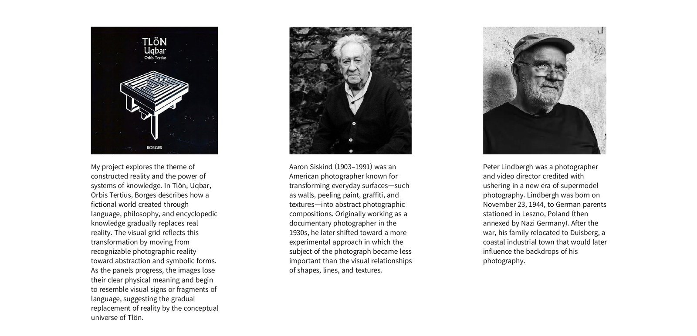
Stories by Jorge Luis Borges

Overview
A book built around stories by Jorge Luis Borges, paired with photographs by Aaron Siskind and Peter Lindbergh.
Brief
Design a book that carries Borges's idea of a world made from language, using photographs that move between the recognisable and the abstract.
Approach
Image research came before any layout. A modular grid and a close study of Bodoni set the rules; drafts were checked as a full sequence to tune the rhythm of the book.
Borges's Tlön, Uqbar, Orbis Tertius: a world built from language slowly replaces the real one.

Photographs by Aaron Siskind and Peter Lindbergh, gathered and sorted before any layout.

Bodoni, studied letter by letter for its contrast and terminals.
A modular grid in Illustrator, tested with image and text blocks.
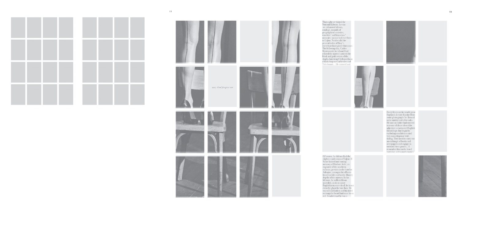
Cover and spread drafts before the final sequence.

Every spread laid out together to check the rhythm of the book.
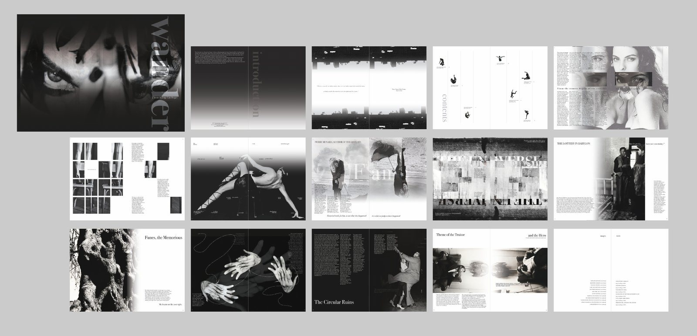
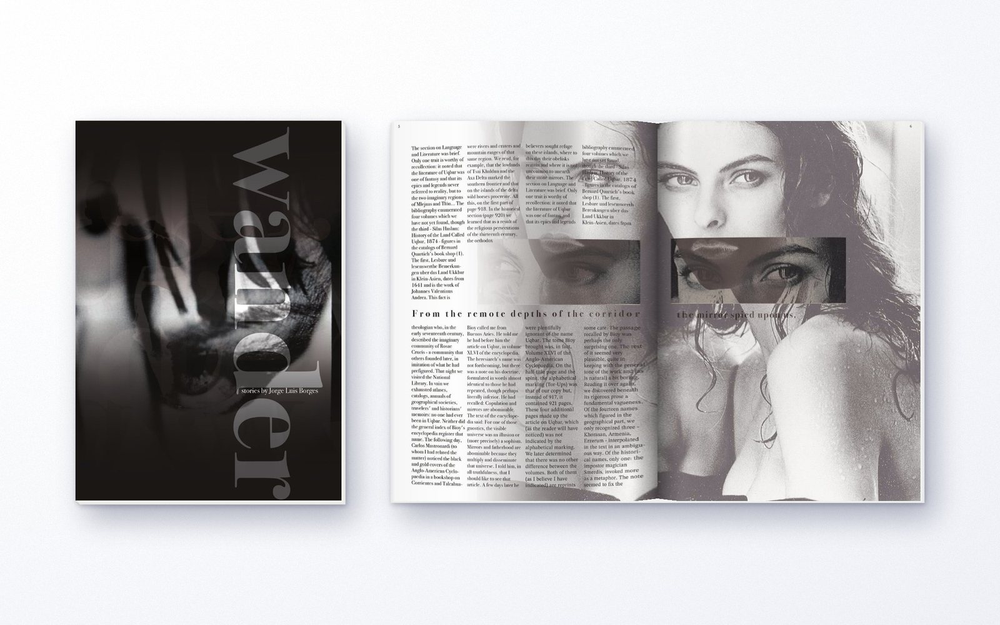
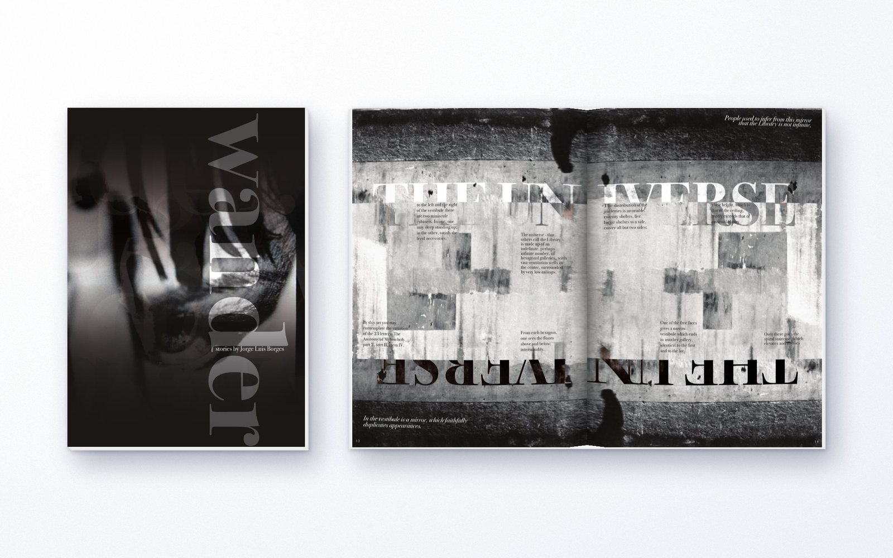

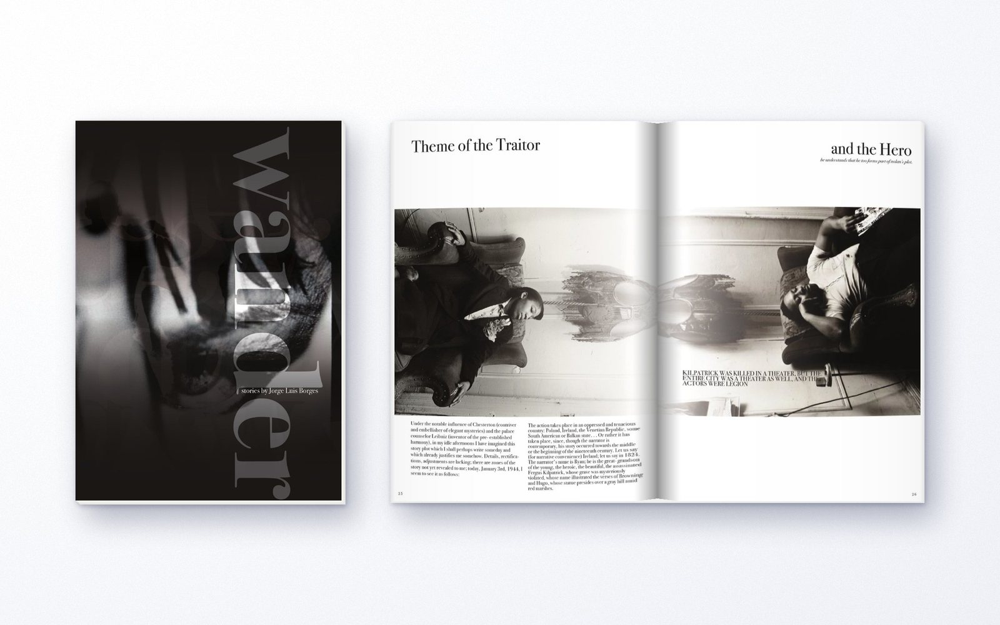
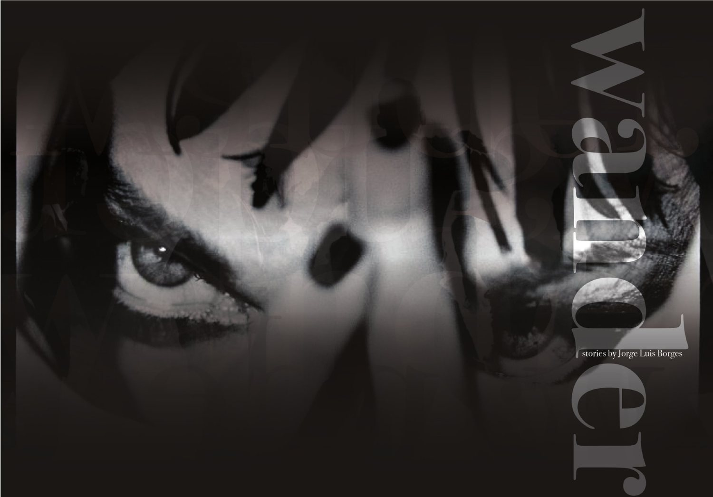

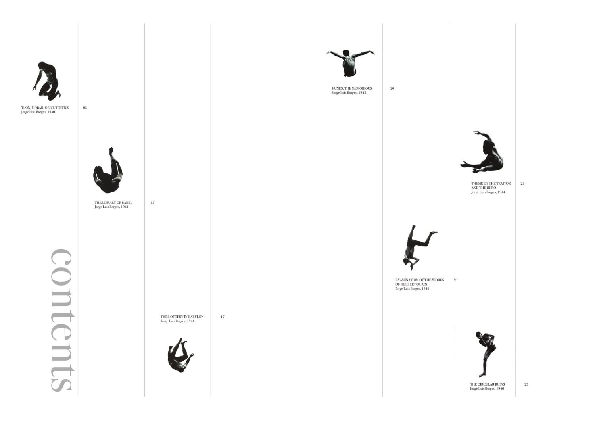

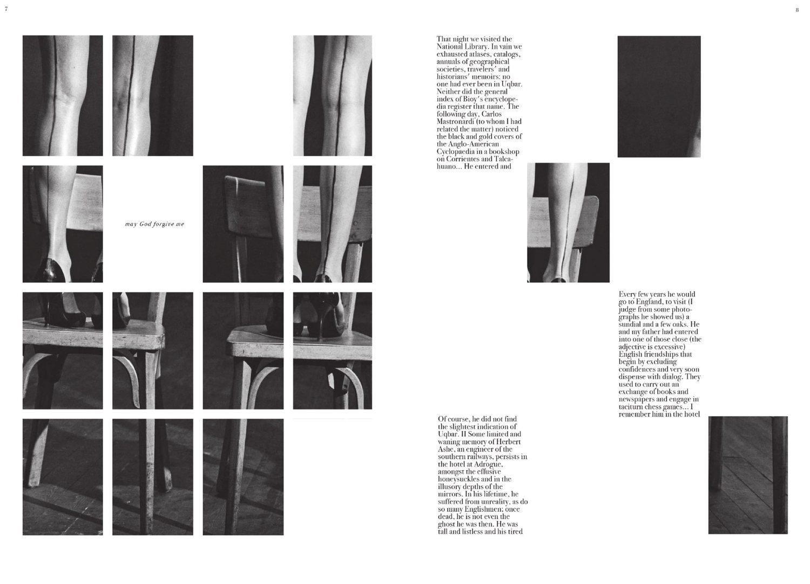


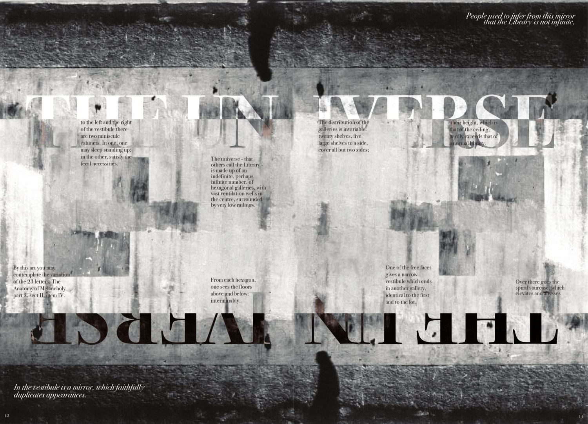
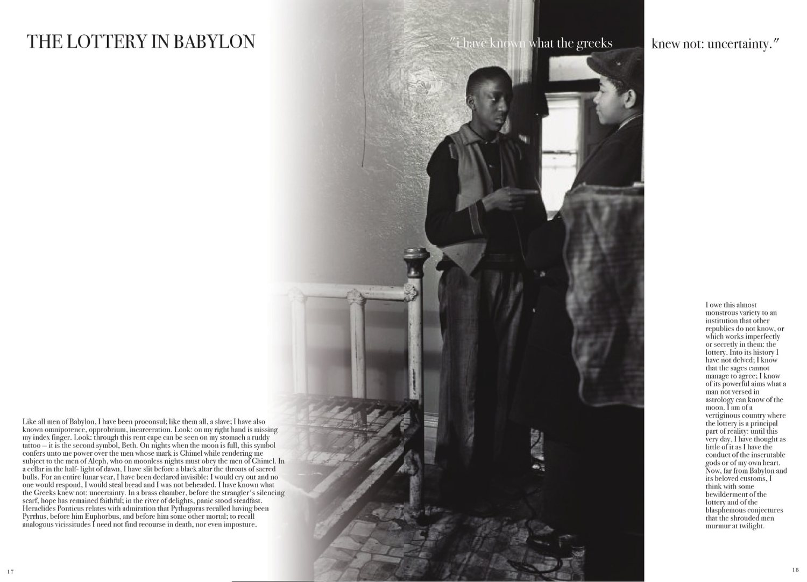


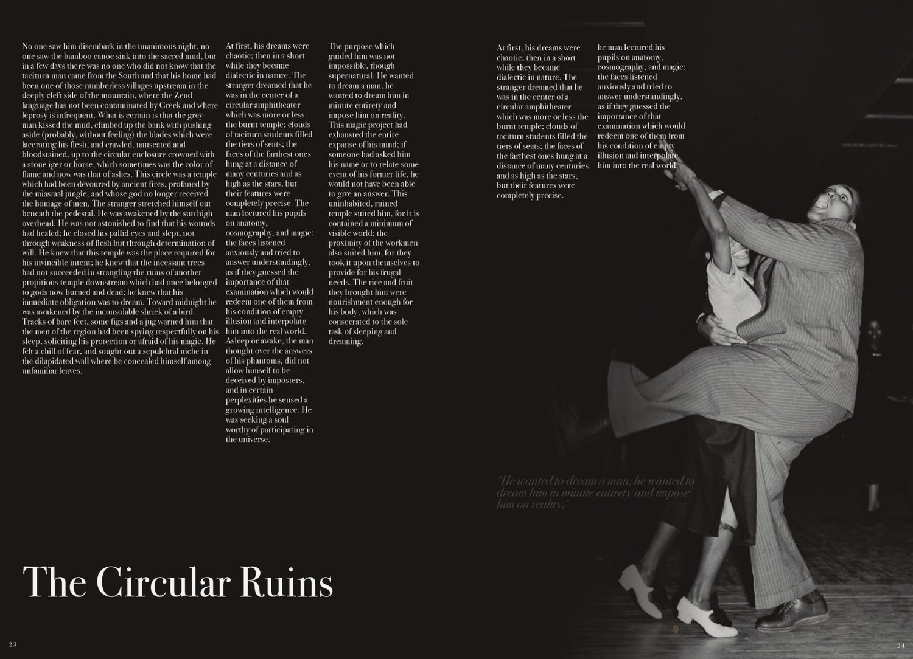


Next, 02
Snippets